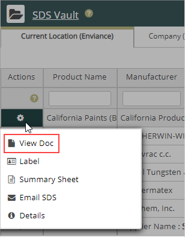
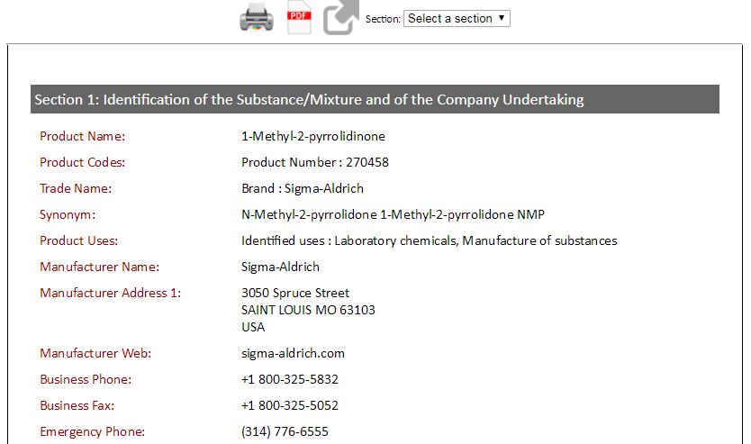
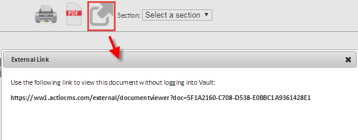
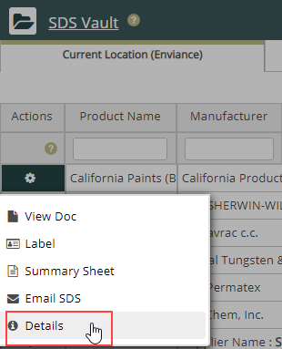
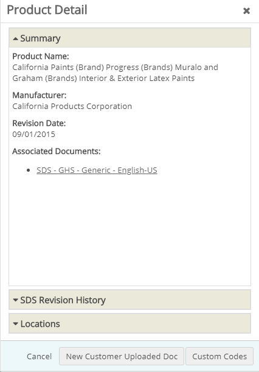

In Vault search results, you can sort the contents of a column in ascending or descending order. Your administrator selects which columns appear.
To sort the current results:
Click a column header to sort results by that column.
The up and down sorting arrows display next to the header label.
Click the column header to toggle between ascending order or descending order.
Note: The columns in your Vault grids are pre-defined by your system administrator.
To view the document:
Click the icon in the Actions column that corresponds to the SDS or document you wish to view.
The action palette displays. The options displayed depend on your role.

Select View Doc.
The document opens in IntelligenTEXT™ format in a new browser tab or window.

To go to a specific section:
To print the document:
To view the original SDS:
Click the PDF icon at the top of the document.
The original SDS opens in PDF format in a separate window.
To save an external a link to the document:
Select the large arrow button at the top.
A popup window displays a link to the document which can be copied and used to access the document directly without logging in.

To view details about the document:
In the action palette, click Details.

The Product Details window displays and lists the product details, including the revision history of the SDS.

If you have other documents organized under the product, such as documents in another language, they appear under Associated Documents.